| 日付 | 2014年4月26日（土） |
|---|---|
| 山域 | 房総 |
| メンバー | 家族（妻、長女・3歳、長男・0歳） |
| 山行形態 | 子連れ日帰り |
| アクセス | 車 |
| ルート (Map) | 高宕第一トンネル (7:33) - (7:56) 石射太郎 (8:06) - (9:34) 高宕山 (10:29) - (11:36) 大滝 (12:01) - (12:40) 高宕第一トンネル |
今月は用事があったり天気が悪かったりで、全く山に行けていない。
本日も夕方は長男の初節句のお祝いをする予定なのだが、天気は快晴。
山の計画を立てることにする。
今回の山行は制約が多い。GW初日のため、東名、中央道、関越は使う気にならない。
昼過ぎには戻って来なければいけないし、
娘の歩けそうな整備された登山道である必要もある。
高尾・陣馬は少々飽きてきたので、今回は房総の山に出向くことにする。
アクアラインが混むと嫌なので5時半に家を出発。
到着は7時半で、駐車場はまだがら空きだ。
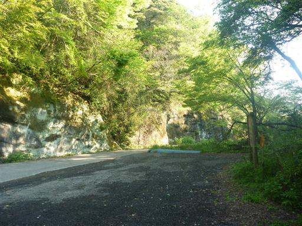
駐車場のすぐ側から登山道が始まっている。
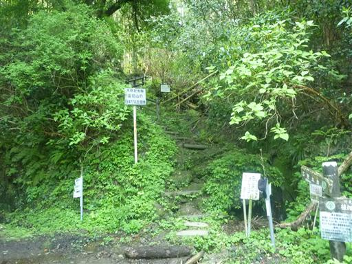
登り始めてすぐに六地蔵が祀られている。
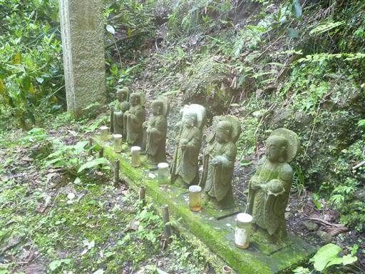
本日は快晴。新緑が目に眩しい。
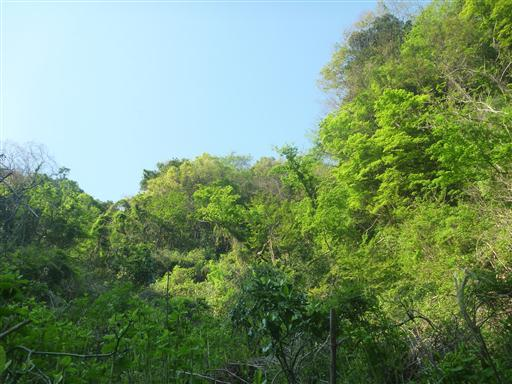
所々、石が切られた跡がある。鋸山同様、この辺りも石切場だったのだろうか？
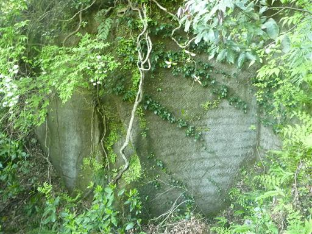
登山道は最初から急坂が続く。久しぶりの登山なので体が辛い。
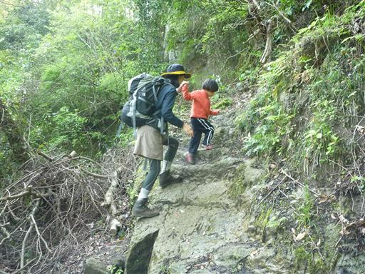
この季節はウツギの花が満開だ。
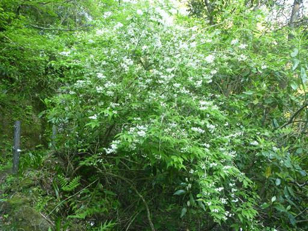
こちらはシャガの花。派手な柄だ。
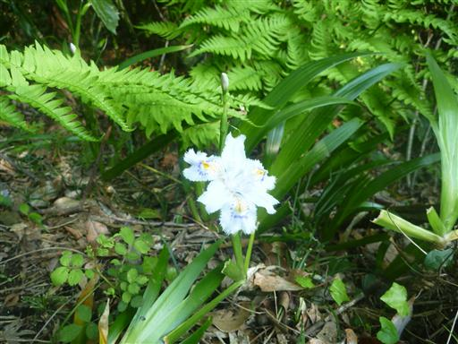
今日は日差しがあって非常に暖かい。ヘビはお昼寝中だ。
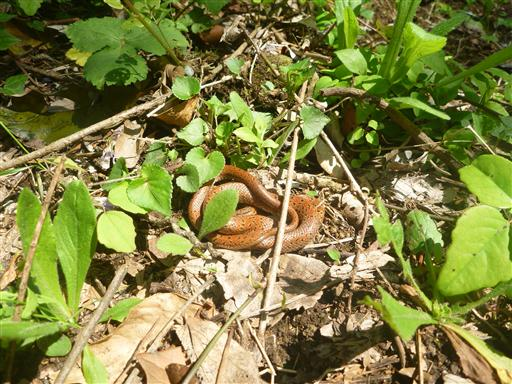
石射太郎に到着。立派な岩壁が目立つが、柵があって近づくことはできない。
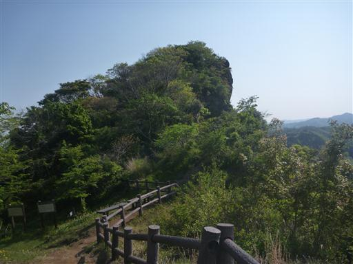
打ち捨てられた粗末な小屋がある。
ベンチがあったので、ここで小休止する。
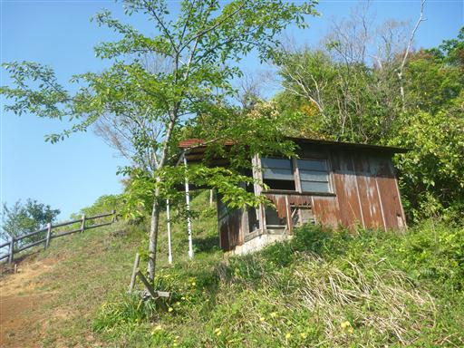
足元にはホタルカズラの花が咲いている。濃い青の美しい花だ。
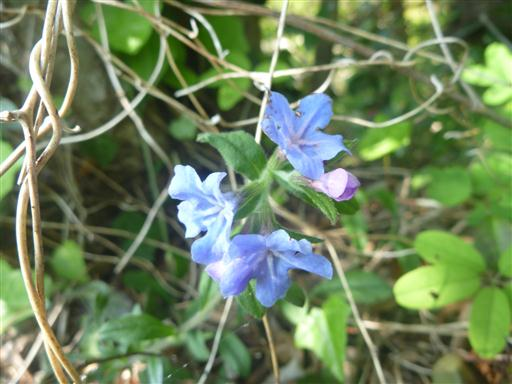
石射太郎から高宕山までは緩やかな尾根道が続く。
歩いていて気持ちが良い。
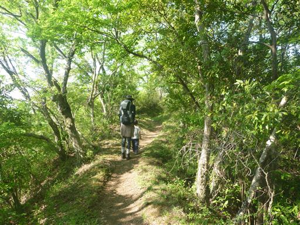
ホウチャクソウ。白い花がぶら下がっている。
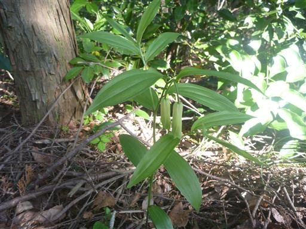
歩きやすい道はまだまだ続く。娘は平坦な道になると走り出すので危なっかしい。
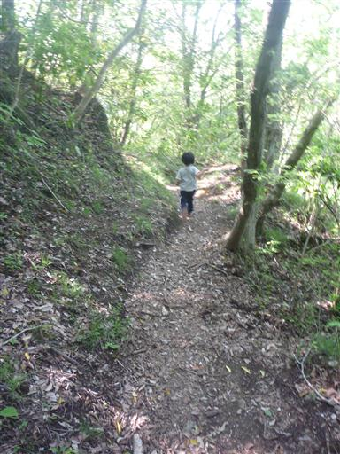
緩やかなアップダウンを繰り返すと、ようやく高宕観音に到着する。
ここからは急な登りが始まる。
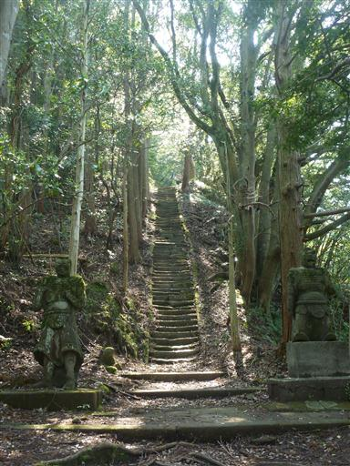
岩の庇の下に三重塔が建っている。
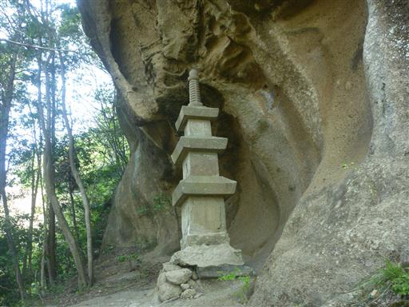
岩を掘ってできた階段。付近は苔に覆われている。
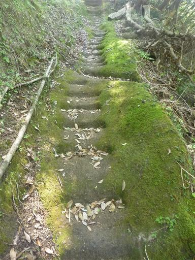
高宕観音。御堂が半分岩に埋まっている。
ここは5年前に1度訪れているが、その時から何も変わっていない。
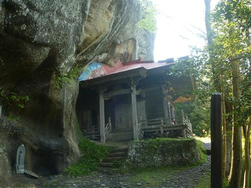
岩のうえからぽたぽたとしずくが落ちていて、小さな水たまりができている。
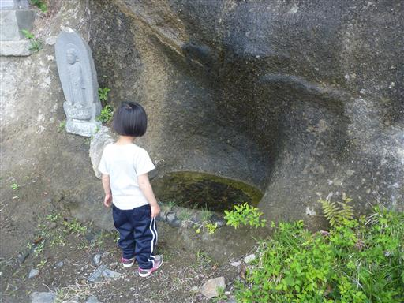
高宕観音の裏に御堂をぐるりと一周できる岩穴が掘られている。
前回来たときは気づかなかった穴だ。
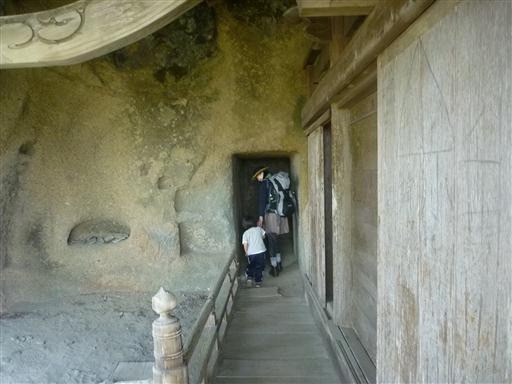
高宕観音の先は岩を掘って造られた階段とトンネル。
かなり急な階段で登りにくい。
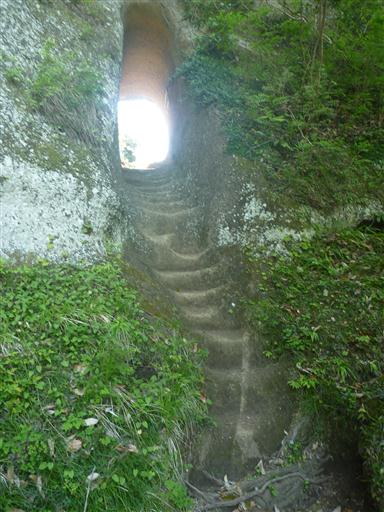
トンネルを抜けると高宕山山頂はもうすぐだ。
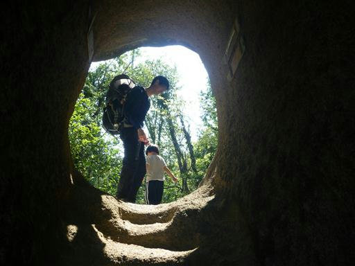
慎重に梯子を登る。

今度はロープのある岩場。簡単な岩場だが落ちると危険。
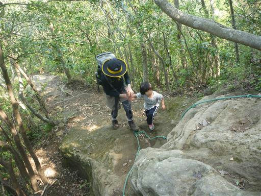
最後にもう1度梯子を登って高宕山の山頂に到着する。標高330m。
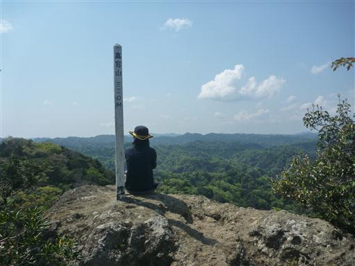
山頂からは大展望が広がる。
前回来たときよりも時期が早いため、その分新緑がきれいだ。
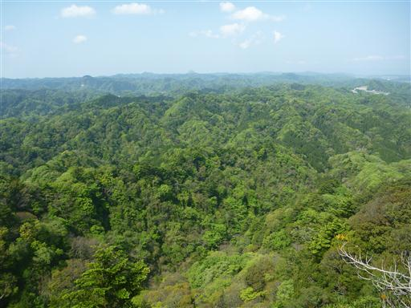
狭い山頂の周りは崖になっている。
注意力散漫な娘が落下しないよう気を配る必要があるため、あまり落ち着けない。
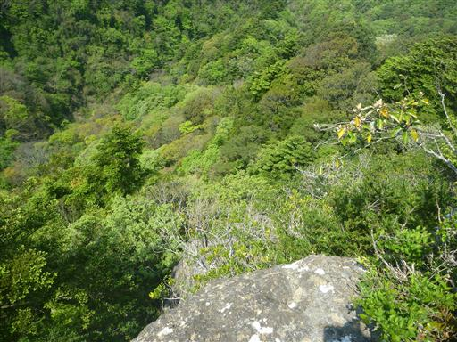
昼食をとったら大展望に別れを告げて下山を開始する。
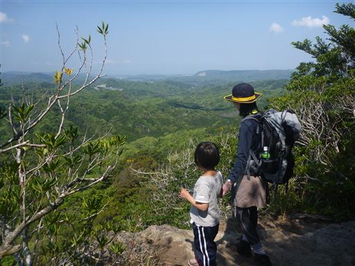
山頂から15分ほどで分岐点に到着。
下山は登りとは道を変えて大滝コースを下ることにする。
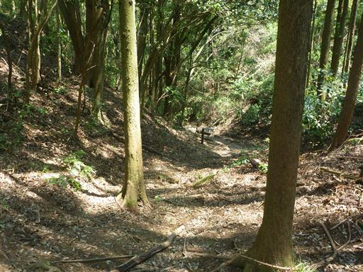
こちらの道は歩く人が少ないのか少々荒れている。
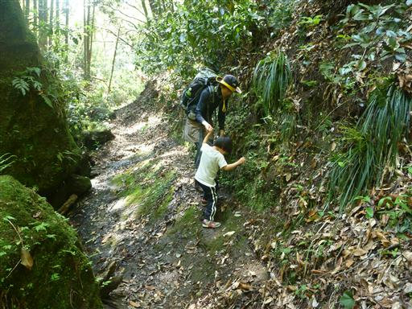
樹液が流れている。血のように真赤だ。
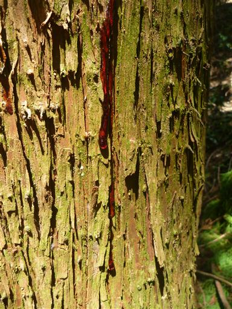
カエルのような形の石の上に、木が生えている。
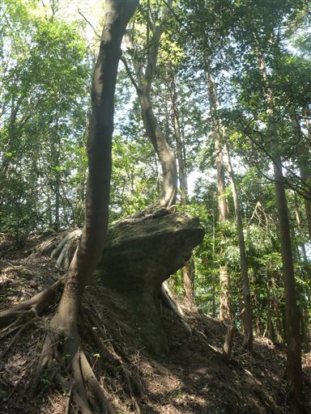
こちらの登山道は距離が短い分、傾斜がきつい。
岩を切ってつくられた独特の階段を延々と下る。
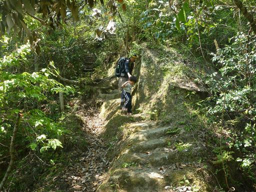
白い花がたくさん咲いているが、何の花だろうか？
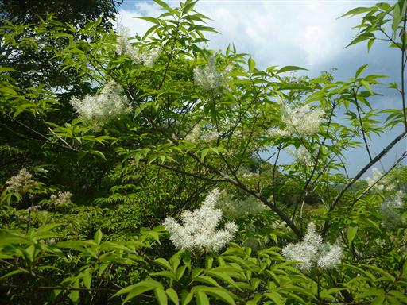
木でできた小さな橋を渡る。
岩がちな地形が多く、歩いていて楽しい登山道だ。
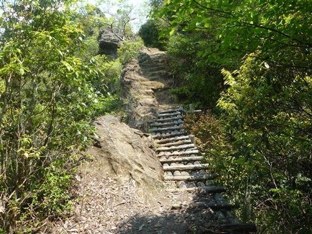
所々で展望が広がる。遠望は無いが新緑が美しい。
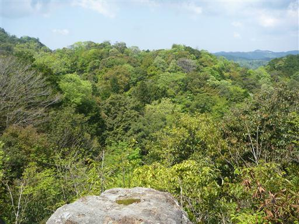
足元にムカデを発見。
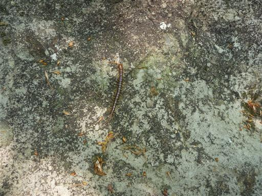
大滝コースの入口に下山。ここには大滝という名の滝がある。
落差30mで、水の流れはほとんどなく、大きな滝とはとても言えないが、
千葉県の滝にしては大きいのだろう。
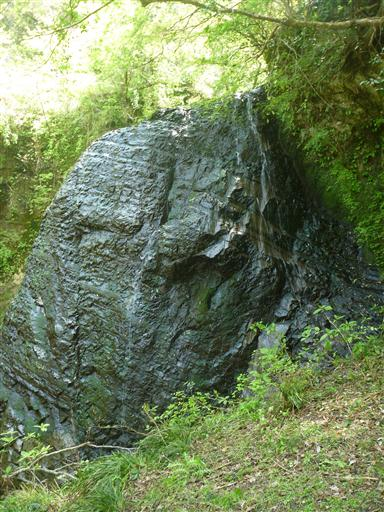
滝壺には小さな水たまりがあり、多くの魚が泳いでいる。
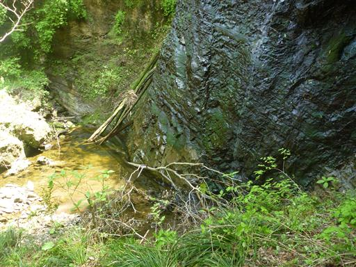
滝の上流部。水がチョロチョロと流れている。
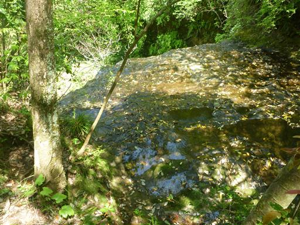
ここから駐車場まで車道歩きがあるのだが、近くにベンチがあったので小休止する。
足元にはヤマルリソウの花が咲いている。
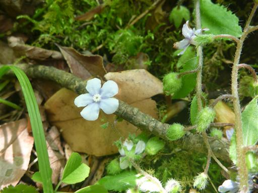
こちらはタニギキョウだろうか？
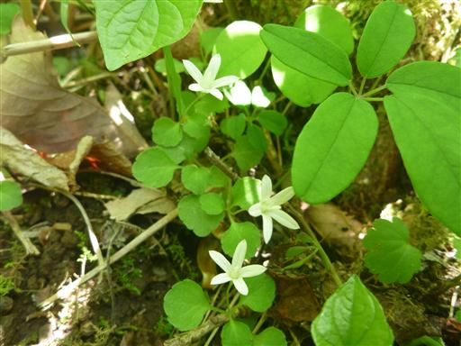
大きな虫取り網。カミキリムシなどを狙っていたが収穫は無し、とのことだった。
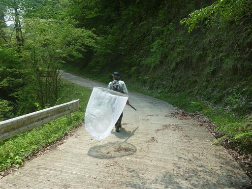
ここからは林道を歩くのみ。陽の光を浴びて新緑が美しいが、何やら黒い雲が…
その後、雷が鳴りだし娘は大パニック。両手を繋いでものすごいスピードで車に向かう。
幸い雨には降られず何とかセーフ。車で帰宅中には大雨に降られ、危ないところであった。
千葉県のみの局地的な雨だったようだ。
最後はトラブルがあったが、久しぶりの山行を楽しむことができた。
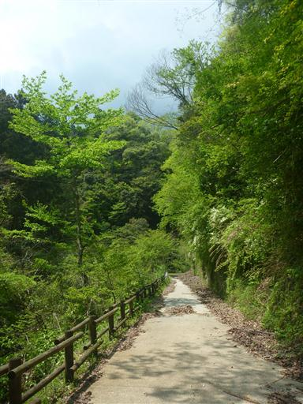